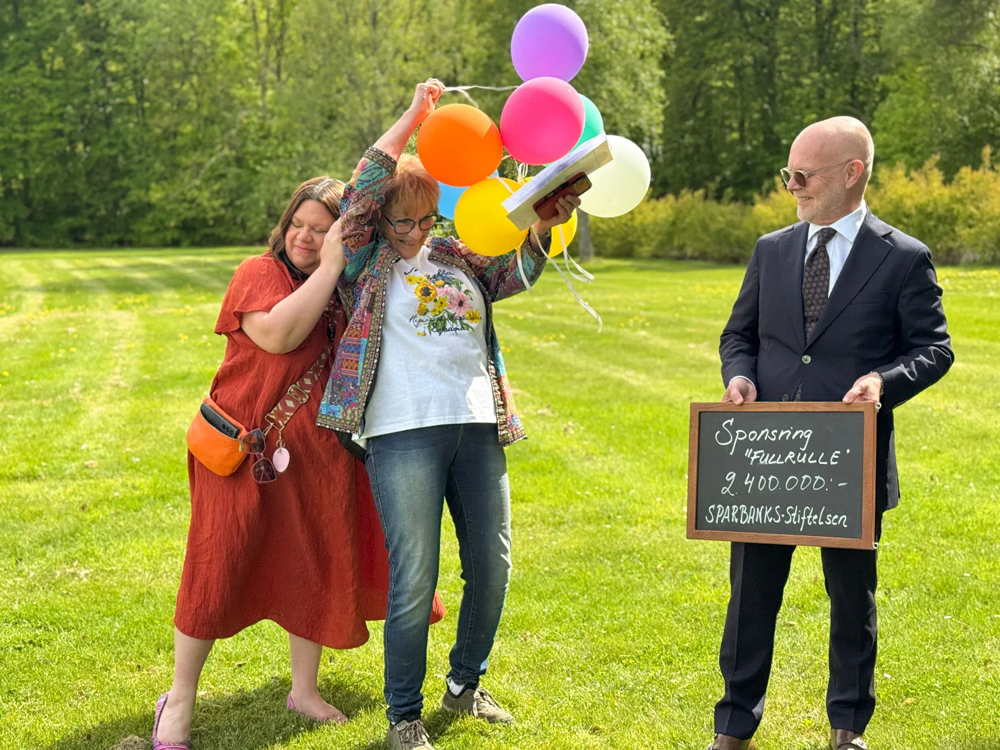
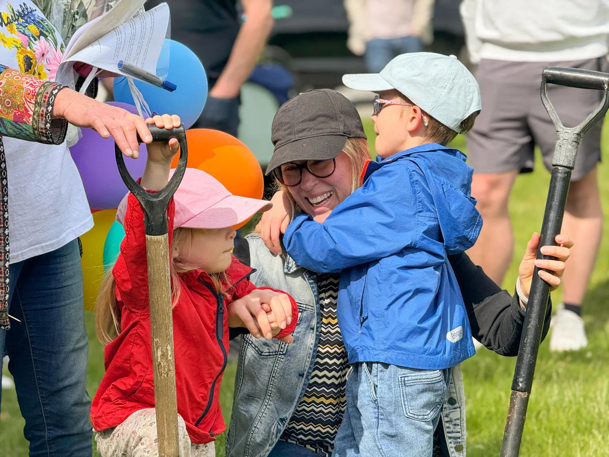
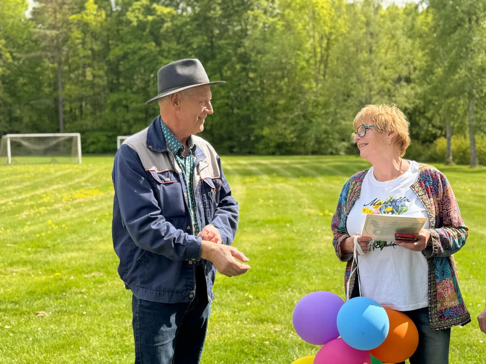
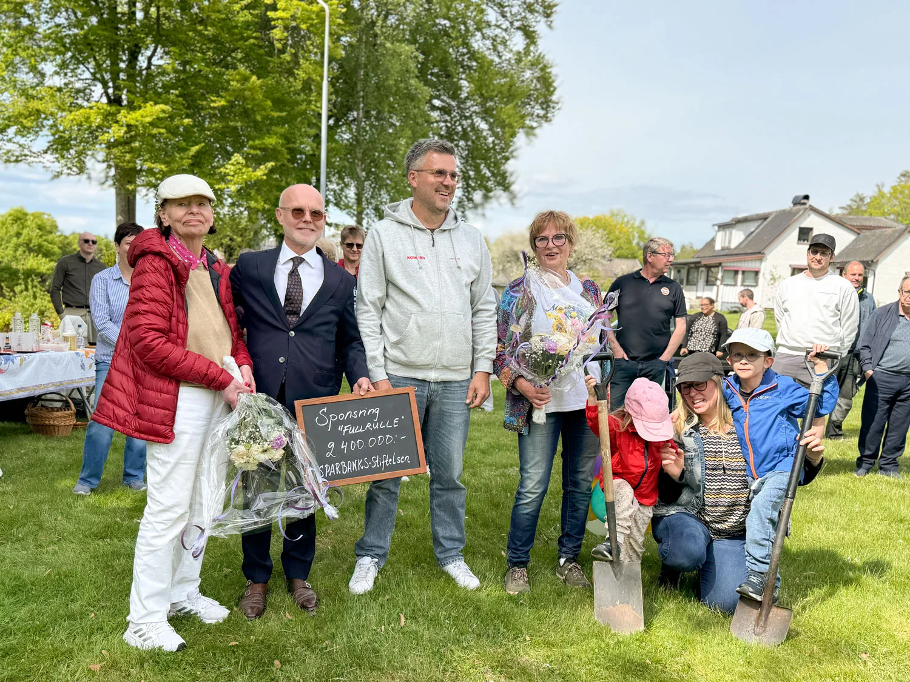

Full Rulle blir en aktivitetspark på hela 8 000 m² med 3 000 m² aktiv yta — en mötesplats för alla åldrar mitt i Svängsta, med allt från klättertorn och ziplines till utegym och grillplats. När den står klar blir det Blekinges största aktivitetspark.
Projektet drivs av Svängsta Samhällsförening och har vuxit fram genom idogt arbete av eldsjälar i byn. När ABU lämnade Svängsta i början av 2025 stod det klart att byn behövde tänka nytt — och aktivitetsparken blev ett sätt att ge Svängsta en ny framtid bortom den industriella identiteten.
I maj 2026 samlades byborna på platsen för den blivande parken för att fira att finansieringen är i mål. Sparbanken i Karlshamns Näringslivsstiftelse bidrog med de sista 2,4 miljonerna och fullbordade därmed det som Allmänna arvsfonden, lokala företagare och privatpersoner i Svängsta byggt upp tillsammans.

Samma dag tog barnen i Svängsta det allra första spadtaget på platsen där parken ska byggas — en symbolisk start på det som länge varit en dröm i byn.

Drivande bakom projektet är Monica Nobach och Ulla Olofsson som länge hållit visionen vid liv. Att parken nu blir verklighet är ett resultat av deras envishet, av byns sammanhållning, och av att lokala företagare och privatpersoner ställt upp när det behövdes.


Vad ingår i parken?
För barn: Ett 9,5 meter högt klättertorn med dubbla rutschbanor och klätterväggar, kompis-gunga för 6–8 barn, dubbla ziplines att tävla på, studsmatta, sandlåda med solsegel — och en tillgänglighetsanpassad lekdel med ramper.
För vuxna & seniorer: Ett komplett utegym med vikter upp till 80 kg, roddmaskin, battle ropes och konditionsstationer — öppet dygnet runt, helt gratis. Här finns också en pergola med grillplats och pingisbord utomhus.
Multisportarena: En arena på ca 36 × 19 meter för fotboll, basket och bandy.
Parken är designad av Kompan, ett internationellt företag med 50 års erfarenhet, och Karlshamns kommun ansvarar för det löpande underhållet. Barnens egna teckningar har fått vara med och påverka utformningen.
Tidplan
Markarbetet är igång våren 2026 och delar av parken beräknas stå klara redan till hösten samma år.
Tack till alla som gjort parken möjlig
Parken kostar totalt 12,1 miljoner kronor — och hela beloppet är nu finansierat. Ett stort tack till:
- Allmänna arvsfonden — 9,79 mkr
- Sparbanken i Karlshamns Näringslivsstiftelse — 2,4 mkr (den sista pusselbiten)
- Karlshamns kommun — belysning och planteringar till ett värde av omkring 1 mkr
- Lokala företagare i Svängsta-bygden, däribland Ingvars Maskindelar
- Privatpersoner i byn som bidragit — tack för att ni trodde på det här tillsammans med oss!